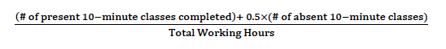

You will be paid twice a month using direct deposit. Paydays are the fifth and twentieth of every month.
|
|
The payment may be deposited to your bank account 1-2 banking days after payday due to processing time. |
Before receiving your first your paycheck, you will need to send the following information to Sunny:
Payments are based on a base rate of $10 per hour. Each month has two pay periods:
You have the opportunity to earn a performance bonus based on your average number of 10-minute classes per hour, as follows:
| $1.00 | 3.5<x≤4.0 |
| $2.30 | 4.0<x≤4.5 |
| $3.60 | 4.5<x≤5.0 |
| $4.90 | 5.0<x |
The average number of 10-minute classes per hour is calculated using the following formula:

A “completed” class is one where the student was present for the required amount of time and the class memo was completed. An absent class is calculatd as 0.5 of a completed class.
If the incentive is $1, then you will be paid at a rate of $11 per hour for each of your work hours from that cut-off period.
Therefore, the total payment for each pay period is (Basic Rate + Incentive) x Work Hours.

In this example, let's look at the pay period from April 16 to April 30.
The teacher completed 66 ten-minute classes, 2 fifteen-minute classes, 35 twenty-minute classes for a total of 139 x 10 minutes.
In addition, she had 10 absent ten-minute classes and 10 absent twenty-minute classes for a total of 30 x 10 minutes, which is multipled by half to get 15 x 10 minutes.
The total number of classes considered completed is 139 + 15 = 154. This value is then divided by the number of work hours, 40.
Given 154 ÷ 40 = 3.85, the student qualifies for a $1 bonus. For 40 hours, the teacher is then paid $440 ($11x40).